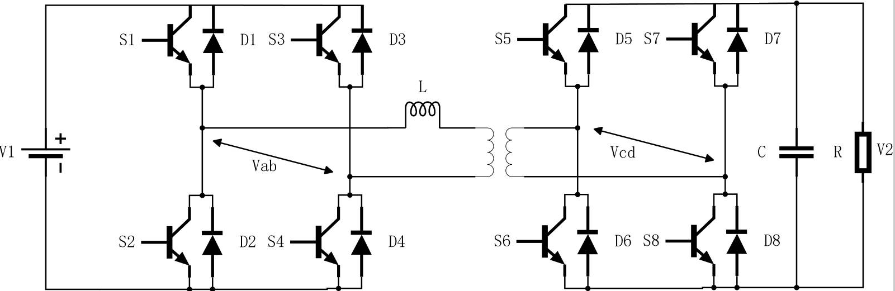
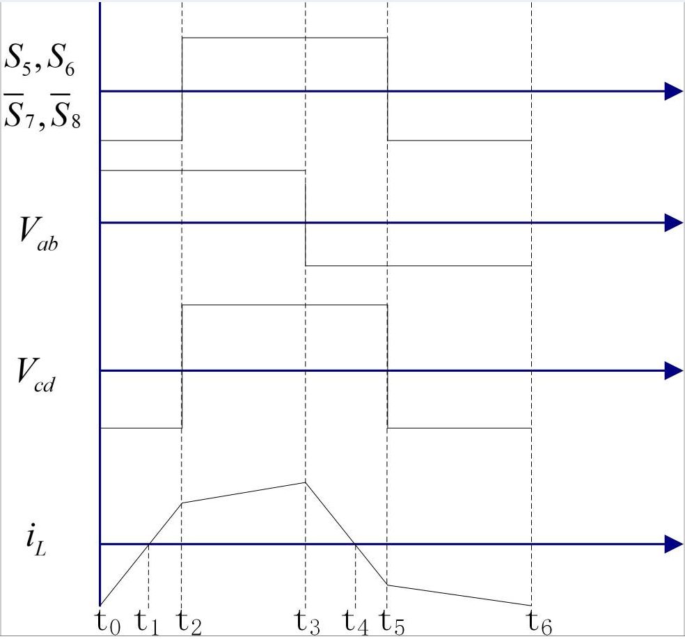

<title>DAB Bridge Operation</title>
<meta name="viewport" content="width=device-width, initial-scale=1, viewport-fit=cover">
<link rel="preconnect" href="https://fonts.googleapis.com">
<link rel="stylesheet" href="https://fonts.googleapis.com/css2?family=IBM+Plex+Mono:wght@400;500;600&family=IBM+Plex+Sans:ital,wght@0,400;0,500;0,600;1,400&display=swap">
<style>
:root {
  --bg: #faf9f7;
  --panel: #ffffff;
  --panel2: #f2f1ed;
  --border: rgba(0,0,0,0.09);
  --text: #1a1a18;
  --text2: #5c5c56;
  --text3: #8c8c84;
  --wire: #3a3a36;
  --grid: rgba(0,0,0,0.08);
  --pri: #1a56db;
  --pri-dim: rgba(26,86,219,0.16);
  --sec: #0d7a4e;
  --sec-dim: rgba(13,122,78,0.16);
  --diode: #b76e0a;
  --diode-dim: rgba(183,110,10,0.18);
  --cursor: #c0392b;
  --band: rgba(26,86,219,0.07);
  --ok: #0d7a4e;
  --ok-dim: rgba(13,122,78,0.10);
  --bad: #c0392b;
  --bad-dim: rgba(192,57,43,0.10);
  --mono: 'IBM Plex Mono', ui-monospace, 'SFMono-Regular', Menlo, monospace;
  --sans: 'IBM Plex Sans', system-ui, -apple-system, 'Segoe UI', sans-serif;
}
@media (prefers-color-scheme: dark) {
  :root:not([data-theme="light"]) {
    color-scheme: dark;
    --bg: #131412;
    --panel: #1b1c1a;
    --panel2: #242522;
    --border: rgba(255,255,255,0.10);
    --text: #ecebe6;
    --text2: #a9a8a0;
    --text3: #7d7c75;
    --wire: #b9b8b0;
    --grid: rgba(255,255,255,0.08);
    --pri: #7aa2ff;
    --pri-dim: rgba(122,162,255,0.20);
    --sec: #45c790;
    --sec-dim: rgba(69,199,144,0.20);
    --diode: #f0a646;
    --diode-dim: rgba(240,166,70,0.22);
    --cursor: #ff6b5b;
    --band: rgba(122,162,255,0.09);
    --ok: #45c790;
    --ok-dim: rgba(69,199,144,0.12);
    --bad: #ff6b5b;
    --bad-dim: rgba(255,107,91,0.12);
  }
}
:root[data-theme="dark"] {
  color-scheme: dark;
  --bg: #131412;
  --panel: #1b1c1a;
  --panel2: #242522;
  --border: rgba(255,255,255,0.10);
  --text: #ecebe6;
  --text2: #a9a8a0;
  --text3: #7d7c75;
  --wire: #b9b8b0;
  --grid: rgba(255,255,255,0.08);
  --pri: #7aa2ff;
  --pri-dim: rgba(122,162,255,0.20);
  --sec: #45c790;
  --sec-dim: rgba(69,199,144,0.20);
  --diode: #f0a646;
  --diode-dim: rgba(240,166,70,0.22);
  --cursor: #ff6b5b;
  --band: rgba(122,162,255,0.09);
  --ok: #45c790;
  --ok-dim: rgba(69,199,144,0.12);
  --bad: #ff6b5b;
  --bad-dim: rgba(255,107,91,0.12);
}
* { box-sizing: border-box; }
body {
  margin: 0;
  background: var(--bg);
  color: var(--text);
  font: 15px/1.6 var(--sans);
}
.wrap {
  max-width: 1180px;
  margin: 0 auto;
  padding-inline: 20px;
  padding-block: 28px 56px;
  display: grid;
  gap: 22px;
}
header { display: grid; gap: 8px; max-width: 72ch; }
.eyebrow {
  font: 500 12px/1 var(--mono);
  letter-spacing: 0.08em;
  text-transform: uppercase;
  color: var(--text3);
}
h1 { margin: 0; font-size: clamp(24px, 3.4vw, 32px); line-height: 1.2; font-weight: 600; text-wrap: balance; }
h2 { margin: 0; font-size: 18px; font-weight: 600; text-wrap: balance; }
h3 { margin: 0; font-size: 16px; font-weight: 600; text-wrap: balance; }
p { margin: 0; }
.lede { color: var(--text2); }
.formula {
  font-family: var(--mono);
  font-size: 13.5px;
  background: var(--panel2);
  border-radius: 6px;
  padding: 8px 12px;
  justify-self: start;
  max-width: 100%;
  overflow-x: auto;
}
.panel {
  background: var(--panel);
  border: 1px solid var(--border);
  border-radius: 10px;
}
.scroll { overflow-x: auto; }
.schem svg { display: block; width: 100%; min-width: 760px; height: auto; }
.wave svg { display: block; width: 100%; min-width: 620px; height: auto; touch-action: pan-y; cursor: ew-resize; }
.schem, .wave { padding: 10px; }

/* controls */
.controls {
  display: flex;
  flex-wrap: wrap;
  gap: 14px 22px;
  align-items: center;
  padding: 14px 16px;
}
.btns { display: flex; gap: 6px; }
button {
  font: 500 13px/1 var(--sans);
  color: var(--text);
  background: var(--panel2);
  border: 1px solid var(--border);
  border-radius: 6px;
  padding: 8px 12px;
  cursor: pointer;
}
button:hover { border-color: var(--pri); }
button:focus-visible, input:focus-visible, tr:focus-visible { outline: 2px solid var(--pri); outline-offset: 2px; }
button.primary { background: var(--pri); color: #fff; border-color: transparent; min-width: 76px; }
:root[data-theme="dark"] button.primary { color: #0e1320; }
@media (prefers-color-scheme: dark) { :root:not([data-theme="light"]) button.primary { color: #0e1320; } }
.slider { display: grid; gap: 4px; min-width: 180px; flex: 1 1 180px; }
.slider label { display: flex; justify-content: space-between; font-size: 13px; color: var(--text2); gap: 8px; }
.slider output { font-family: var(--mono); color: var(--text); font-variant-numeric: tabular-nums; }
input[type="range"] { width: 100%; accent-color: var(--pri); }
.chips { display: flex; flex-wrap: wrap; gap: 6px; }
.chip {
  font: 500 12px/1 var(--mono);
  padding: 6px 8px;
  border-radius: 999px;
  background: var(--panel2);
  color: var(--text2);
  white-space: nowrap;
  font-variant-numeric: tabular-nums;
}
.chip.ok { background: var(--ok-dim); color: var(--ok); }
.chip.bad { background: var(--bad-dim); color: var(--bad); }

.legend { display: flex; flex-wrap: wrap; gap: 6px 18px; font-size: 12.5px; color: var(--text2); padding: 2px 6px 6px; }
.legend span { display: inline-flex; align-items: center; gap: 6px; }
.sw { width: 14px; height: 4px; border-radius: 2px; display: inline-block; }

.split { display: grid; grid-template-columns: minmax(0, 1.55fr) minmax(0, 1fr); gap: 22px; align-items: start; }
@media (max-width: 900px) { .split { grid-template-columns: 1fr; } }

/* interval card */
.card { padding: 18px 18px 16px; display: grid; gap: 14px; }
.iv-head { display: grid; gap: 6px; }
.tag {
  font: 600 12.5px/1 var(--mono);
  color: var(--pri);
  background: var(--pri-dim);
  padding: 6px 8px;
  border-radius: 5px;
  justify-self: start;
}
.card dl { margin: 0; display: grid; gap: 12px; }
.card dt { font: 500 11.5px/1.2 var(--mono); letter-spacing: 0.06em; text-transform: uppercase; color: var(--text3); margin-bottom: 3px; }
.card dd { margin: 0; font-size: 14.5px; }
.dev-name { font-family: var(--mono); font-weight: 600; }
.dev-name.t-pri { color: var(--pri); }
.dev-name.t-sec { color: var(--sec); }
.dev-name.d { color: var(--diode); }
.note { font-size: 13.5px; color: var(--text2); border-top: 1px solid var(--border); padding-top: 12px; }

/* table */
.tbl { padding: 6px 0; }
table { border-collapse: collapse; width: 100%; min-width: 640px; font-size: 13.5px; }
th, td { text-align: left; padding: 9px 14px; border-bottom: 1px solid var(--border); vertical-align: top; }
th { font: 500 11.5px/1.2 var(--mono); letter-spacing: 0.06em; text-transform: uppercase; color: var(--text3); }
tbody tr { cursor: pointer; }
tbody tr:hover { background: var(--panel2); }
tbody tr.cur { background: var(--band); }
td.mono { font-family: var(--mono); white-space: nowrap; font-variant-numeric: tabular-nums; }

.section { display: grid; gap: 10px; }
.section > p { max-width: 72ch; color: var(--text2); }
.figs { display: grid; grid-template-columns: minmax(0, 1.6fr) minmax(0, 1fr); gap: 16px; align-items: start; }
@media (max-width: 760px) { .figs { grid-template-columns: 1fr; } }
figure { margin: 0; padding: 12px; display: grid; gap: 8px; }
figure img { width: 100%; height: auto; background: #fff; border-radius: 4px; }
figcaption { font-size: 13px; color: var(--text2); }

/* svg styling */
svg text { font-family: var(--mono); fill: var(--text2); font-size: 13px; }
svg .lbl-big { font-size: 15px; fill: var(--text); font-weight: 500; }
.wire { stroke: var(--wire); stroke-width: 1.6; fill: none; stroke-linecap: round; stroke-linejoin: round; }
.solid { fill: var(--wire); }
.node { fill: var(--wire); }
.dev path { stroke: var(--wire); stroke-width: 1.6; fill: none; stroke-linejoin: round; }
.dev .fillme { fill: var(--wire); stroke: none; }
.dev .halo { fill: transparent; stroke: none; }
.dev.gated text { fill: var(--text); font-weight: 600; }
.dev.gated .gate { stroke: var(--text); stroke-width: 2.4; }
.dev.on.pri path { stroke: var(--pri); stroke-width: 2.4; }
.dev.on.pri .fillme { fill: var(--pri); }
.dev.on.pri .halo { fill: var(--pri-dim); }
.dev.on.pri text { fill: var(--pri); }
.dev.on.sec path { stroke: var(--sec); stroke-width: 2.4; }
.dev.on.sec .fillme { fill: var(--sec); }
.dev.on.sec .halo { fill: var(--sec-dim); }
.dev.on.sec text { fill: var(--sec); }
.dev.diode.on path { stroke: var(--diode); }
.dev.diode.on .fillme { fill: var(--diode); }
.dev.diode.on .halo { fill: var(--diode-dim); }
.dev.diode.on text { fill: var(--diode); font-weight: 600; }
.flow-band { fill: none; stroke-width: 9; stroke-linejoin: round; opacity: 0.22; }
.flow-dash { fill: none; stroke-width: 2.6; stroke-dasharray: 7 9; stroke-linejoin: round; animation: flow 0.7s linear infinite; }
.flow-pri { stroke: var(--pri); }
.flow-sec { stroke: var(--sec); }
@keyframes flow { to { stroke-dashoffset: -16; } }
@media (prefers-reduced-motion: reduce) { .flow-dash { animation: none; } }
.paused .flow-dash { animation-play-state: paused; }

.w-axis { stroke: var(--grid); stroke-width: 1; }
.w-ev { stroke: var(--text3); stroke-width: 1; stroke-dasharray: 3 4; }
.w-trace { fill: none; stroke: var(--text); stroke-width: 1.8; stroke-linejoin: round; }
.w-pri { stroke: var(--pri); }
.w-sec { stroke: var(--sec); }
.w-il { stroke: var(--cursor); stroke-width: 2.2; }
.w-band { fill: var(--band); }
.w-cursor { stroke: var(--cursor); stroke-width: 1.4; }
.w-dot { fill: var(--cursor); }
.w-row { font-size: 19px; fill: var(--text); font-weight: 500; }
.w-small { font-size: 16px; fill: var(--text3); }
.w-tlabel { font-size: 19px; fill: var(--text2); }
.w-phi { stroke: var(--text2); stroke-width: 1.2; fill: none; }
</style>

<main class="wrap">
  <header>
    <div class="eyebrow">1.DAB · Dual Active Bridge</div>
    <h1>How the two active full bridges move power</h1>
    <p class="lede">A DAB has a full bridge on each side of the transformer, and both are switched. Each bridge makes a ±V square wave at 50% duty. The secondary square wave is delayed by the phase shift φ. That delay puts a voltage across the series inductor L, and the inductor current carries power from the leading bridge to the lagging one. Press play, drag across the waveforms, or click a row in the table to step through each interval.</p>
    <div class="formula">P = n·V₁·V₂·φ(π − φ) / (2π²·f<sub>s</sub>·L)</div>
  </header>

  <section class="panel">
    <div class="scroll schem" id="schemWrap">
      <svg id="schem" viewBox="0 0 1000 455" role="img" aria-label="DAB schematic with conducting devices and current path highlighted"></svg>
    </div>
    <div class="legend">
      <span><i class="sw" style="background:var(--pri)"></i>Primary current / switch conducting</span>
      <span><i class="sw" style="background:var(--sec)"></i>Secondary current / switch conducting</span>
      <span><i class="sw" style="background:var(--diode)"></i>Anti-parallel diode conducting</span>
      <span><b style="color:var(--text)">Bold label</b> = gate signal on</span>
    </div>
  </section>

  <section class="panel controls" aria-label="Playback and operating point">
    <div class="btns">
      <button id="prev" type="button" aria-label="Previous interval">◀ Prev</button>
      <button id="play" type="button" class="primary">Pause</button>
      <button id="next" type="button" aria-label="Next interval">Next ▶</button>
    </div>
    <div class="slider">
      <label for="phi">Phase shift φ <output id="phiOut">60°</output></label>
      <input id="phi" type="range" min="5" max="90" step="1" value="60">
    </div>
    <div class="slider">
      <label for="dr">Voltage ratio d = nV₂/V₁ <output id="dOut">0.85</output></label>
      <input id="dr" type="range" min="0.5" max="1.5" step="0.01" value="0.85">
    </div>
    <div class="slider">
      <label for="spd">Speed <output id="spdOut">1×</output></label>
      <input id="spd" type="range" min="0.25" max="3" step="0.25" value="1">
    </div>
    <div class="chips" id="chips"></div>
  </section>

  <div class="split">
    <section class="panel">
      <div class="scroll wave">
        <svg id="wave" viewBox="0 0 1000 450" role="img" aria-label="Gate signals, bridge voltages and inductor current over one switching period"></svg>
      </div>
    </section>
    <section class="panel card" id="card" aria-live="polite"></section>
  </div>

  <section class="section">
    <h2>Every interval in one switching period</h2>
    <div class="panel scroll tbl">
      <table>
        <thead><tr><th>Interval</th><th>Primary conducts</th><th>Secondary conducts</th><th>Voltage on L</th><th>What happens</th></tr></thead>
        <tbody id="tbody"></tbody>
      </table>
    </div>
  </section>

  <section class="section">
    <h2>Reference figures</h2>
    <p>These are the original figures in <code>1.DAB/image</code>. The waveform figure labels the secondary gates “S5, S6 / S̄7, S̄8”. In the schematic, S5 and S6 sit in the same leg and can never be on together, so this page uses the diagonal pairs S5·S8 and S6·S7, which give the same v<sub>cd</sub>.</p>
    <div class="figs">
      <figure class="panel">
        
        <figcaption>DAB power stage (V₁, S1–S4, L, transformer, S5–S8, C ∥ R).</figcaption>
      </figure>
      <figure class="panel">
        
        <figcaption>Secondary gating, v<sub>ab</sub>, v<sub>cd</sub> and i<sub>L</sub> for t₀…t₆.</figcaption>
      </figure>
    </div>
  </section>
</main>

<script>
(() => {
  // ---------- geometry ----------
  const TOP = 50, BOT = 400, YU = 125, YL = 325, YA = 200, YB = 260, H = 45, OFF = 18;
  const X = { A: 190, B: 330, C: 720, D: 860 };
  const XV = 50, XP = 596, XS = 634, XC = 920, XR = 970;
  const POS = { 1: [X.A, YU], 2: [X.A, YL], 3: [X.B, YU], 4: [X.B, YL], 5: [X.C, YU], 6: [X.C, YL], 7: [X.D, YU], 8: [X.D, YL] };
  const PRI = { P: [1, 4], N: [2, 3] };
  const SEC = { P: [5, 8], N: [6, 7] };

  const st = {
    phi: 60, d: 0.85, t: 0.02, speed: 1,
    playing: !window.matchMedia('(prefers-reduced-motion: reduce)').matches,
    ivIdx: -1,
  };
  const $ = (s) => document.querySelector(s);

  // ---------- model (normalized: half period = 1, current unit = V1/(2 fs L)) ----------
  let M;
  function buildModel() {
    const pn = st.phi / 180, d = st.d;
    const I0 = -(1 - d + 2 * d * pn) / 2;   // iL at t0
    const I1 = (d - 1 + 2 * pn) / 2;        // iL when the secondary switches (t2)
    const knots = [[0, I0], [pn, I1], [1, -I0], [1 + pn, -I1], [2, I0]];
    const slopes = [1 + d, 1 - d, -(1 + d), -(1 - d)];
    const ev = [0, pn, 1, 1 + pn];
    const zc = [];
    for (let k = 0; k < 4; k++) {
      const ia = knots[k][1], ib = knots[k + 1][1];
      if ((ia < 0 && ib > 0) || (ia > 0 && ib < 0)) { const t = knots[k][0] - ia / slopes[k]; ev.push(t); zc.push(t); }
    }
    const evs = [...new Set(ev.map((v) => +v.toFixed(9)))].sort((a, b) => a - b);
    evs.push(2);
    const iv = [];
    for (let k = 0; k < evs.length - 1; k++) if (evs[k + 1] - evs[k] > 1e-6) iv.push({ a: evs[k], b: evs[k + 1] });
    const maxI = Math.max(Math.abs(I0), Math.abs(I1), 1e-3);
    M = { pn, d, I0, I1, knots, iv, zc, maxI };
  }
  function iAt(t) {
    const k = M.knots;
    for (let j = 0; j < 4; j++) {
      if (t <= k[j + 1][0]) {
        const [ta, ia] = k[j], [tb, ib] = k[j + 1];
        return ia + (ib - ia) * (t - ta) / (tb - ta);
      }
    }
    return k[4][1];
  }
  function stateAt(t) {
    const pg = t < 1 ? 'P' : 'N';
    const sg = (t >= M.pn && t < 1 + M.pn) ? 'P' : 'N';
    const i = iAt(t);
    const vab = pg === 'P' ? 1 : -1;
    const vcd = sg === 'P' ? M.d : -M.d;
    const flowing = Math.abs(i) > 1e-4;
    const pT = pg === 'P' ? i > 0 : i < 0;   // primary current through the switches (else the diodes)
    const sT = sg === 'P' ? i < 0 : i > 0;   // secondary current through the switches (else the diodes)
    return { pg, sg, i, vab, vcd, flowing, pT, sT };
  }
  const devList = (pair, T) => pair.map((n) => (T ? 'S' : 'D') + n);

  // ---------- schematic ----------
  function branchPts(p, w, down) {
    const [x, yc] = POS[p];
    const bx = x + (w === 'T' ? -OFF : OFF);
    const pts = [[x, yc - H], [bx, yc - H], [bx, yc + H], [x, yc + H]];
    return down ? pts : pts.reverse();
  }
  function priLoop(pg, w) {
    const { A, B } = X;
    const pts = [[A, YA], [XP, YA], [XP, YB], [B, YB]];
    if (pg === 'P') pts.push(...branchPts(4, w, true), [B, BOT], [XV, BOT], [XV, TOP], [A, TOP], ...branchPts(1, w, true), [A, YA]);
    else pts.push(...branchPts(3, w, false), [B, TOP], [XV, TOP], [XV, BOT], [A, BOT], ...branchPts(2, w, false), [A, YA]);
    return pts;
  }
  function secLoop(sg, w) {
    const { C, D } = X;
    const pts = [[XS, YA], [C, YA]];
    if (sg === 'P') pts.push(...branchPts(5, w, false), [C, TOP], [XC, TOP], [XC, BOT], [D, BOT], ...branchPts(8, w, false), [D, YB]);
    else pts.push(...branchPts(6, w, true), [C, BOT], [XC, BOT], [XC, TOP], [D, TOP], ...branchPts(7, w, true), [D, YB]);
    pts.push([XS, YB], [XS, YA]);
    return pts;
  }

  function devSVG(p) {
    const [x, yc] = POS[p];
    const xt = x - OFF, xd = x + OFF;
    const side = p <= 4 ? 'pri' : 'sec';
    return `
      <g class="dev ${side}" id="S${p}"><title>Switch S${p}</title>
        <rect class="halo" x="${xt - 32}" y="${yc - 30}" width="44" height="60" rx="6"/>
        <path d="M${xt},${yc - H} V${yc - 20} L${xt - 10},${yc - 9} M${xt - 10},${yc + 9} L${xt},${yc + 20} V${yc + H}"/>
        <path d="M${xt - 10},${yc - 15} V${yc + 15}"/>
        <polygon class="fillme" points="${xt},${yc + 20} ${xt - 7.3},${yc + 17.2} ${xt - 2.1},${yc + 12.5}"/>
        <path class="gate" d="M${xt - 16},${yc - 12} V${yc + 12} M${xt - 16},${yc} H${xt - 26}"/>
        <text x="${xt - 30}" y="${yc + 4.5}" text-anchor="end">S${p}</text>
      </g>
      <g class="dev diode ${side}" id="D${p}"><title>Diode D${p}</title>
        <rect class="halo" x="${xd - 14}" y="${yc - 30}" width="28" height="60" rx="6"/>
        <path d="M${xd},${yc - H} V${yc + H}"/>
        <polygon class="fillme" points="${xd - 9},${yc + 8} ${xd + 9},${yc + 8} ${xd},${yc - 8}"/>
        <path d="M${xd - 9},${yc - 8} H${xd + 9}"/>
        <text x="${xd + 14}" y="${yc + 4.5}">D${p}</text>
      </g>`;
  }
  function legWires(x) {
    return `M${x},${TOP} V${YU - H} M${x},${YU + H} V${YL - H} M${x},${YL + H} V${BOT}` +
      [YU, YL].map((yc) => ` M${x - OFF},${yc - H} H${x + OFF} M${x - OFF},${yc + H} H${x + OFF}`).join('');
  }
  function drawSchematic() {
    const coilL = Array.from({ length: 4 }, () => 'a10,10 0 0 1 20,0').join(' ');
    const coilP = Array.from({ length: 3 }, () => 'a10,10 0 0 1 0,20').join(' ');
    const coilS = Array.from({ length: 3 }, () => 'a10,10 0 0 0 0,20').join(' ');
    const wires = [
      // primary rails and source
      `M${XV},${TOP} H${X.B} M${XV},${BOT} H${X.B}`,
      `M${XV},${TOP} V${214} M${XV},${226} V${BOT}`,
      legWires(X.A), legWires(X.B),
      // node a -> L -> primary winding (hop over leg b)
      `M${X.A},${YA} H${X.B - 6} a6,6 0 0 1 12,0 H440 ${coilL} H${XP}`,
      `M${XP},${YA} ${coilP}`,
      `M${X.B},${YB} H${XP}`,
      // secondary winding -> node c, node d (hop over leg c)
      `M${XS},${YA} ${coilS}`,
      `M${XS},${YA} H${X.C}`,
      `M${XS},${YB} H${X.C - 6} a6,6 0 0 1 12,0 H${X.D}`,
      legWires(X.C), legWires(X.D),
      `M${X.C},${TOP} H${XR} M${X.C},${BOT} H${XR}`,
      `M${XC},${TOP} V218 M${XC},232 V${BOT}`,
      `M${XR},${TOP} V192 M${XR},258 V${BOT}`,
    ].join(' ');
    const svg = `
      <path class="wire" d="${wires}"/>
      <path class="wire" d="M${XP + 17},190 V270 M${XP + 21},190 V270"/>
      <path class="wire" style="stroke-width:3" d="M${XV - 20},214 H${XV + 20} M${XC - 16},218 H${XC + 16} M${XC - 16},232 H${XC + 16}"/>
      <path class="wire" style="stroke-width:5" d="M${XV - 11},226 H${XV + 11}"/>
      <rect class="wire" x="${XR - 8}" y="192" width="16" height="66" rx="1"/>
      <circle class="node" cx="${XP - 8}" cy="${YA - 4}" r="3"/>
      <circle class="node" cx="${XS + 8}" cy="${YA - 4}" r="3"/>
      ${[[X.A, YA], [X.B, YB], [X.C, YA], [X.D, YB], [X.A, TOP], [X.A, BOT], [XC, TOP], [XC, BOT], [X.D, TOP], [X.D, BOT]]
        .map(([x, y]) => `<circle class="node" cx="${x}" cy="${y}" r="3.4"/>`).join('')}
      <text class="lbl-big" x="${XV - 14}" y="208" text-anchor="end">+</text>
      <text class="lbl-big" x="${XV - 26}" y="246" text-anchor="middle">V₁</text>
      <text class="lbl-big" x="480" y="${YA + 28}" text-anchor="middle">L</text>
      <text class="lbl-big" x="${(XP + XS) / 2}" y="292" text-anchor="middle">n : 1</text>
      <text class="lbl-big" x="${XC - 26}" y="${230}" text-anchor="end">C</text>
      <text class="lbl-big" x="${XR - 16}" y="${230}" text-anchor="end">R</text>
      <text class="lbl-big" x="${XR + 16}" y="${196}" text-anchor="start" style="font-size:13px">+</text>
      <text class="lbl-big" x="${XR + 14}" y="${234}" text-anchor="start">V₂</text>
      <text x="${X.A - 10}" y="${YA - 8}" text-anchor="end">a</text>
      <text x="${X.B + 10}" y="${YB - 8}">b</text>
      <text x="${X.C - 10}" y="${YA - 8}" text-anchor="end">c</text>
      <text x="${X.D + 10}" y="${YB - 8}">d</text>
      <g id="flows">
        <polyline id="pBand" class="flow-band flow-pri"/><polyline id="sBand" class="flow-band flow-sec"/>
        <polyline id="pDash" class="flow-dash flow-pri"/><polyline id="sDash" class="flow-dash flow-sec"/>
      </g>
      ${[1, 2, 3, 4, 5, 6, 7, 8].map(devSVG).join('')}
      <text id="iLbl" x="480" y="${YA - 22}" text-anchor="middle" class="lbl-big" style="font-size:14px"></text>
      <text id="vabLbl" x="${(X.A + X.B) / 2}" y="440" text-anchor="middle"></text>
      <text id="vcdLbl" x="${(X.C + X.D) / 2}" y="440" text-anchor="middle"></text>
      <text id="pLbl" x="${(XP + XS) / 2}" y="440" text-anchor="middle"></text>`;
    $('#schem').innerHTML = svg;
  }
  const ptsStr = (pts) => pts.map((p) => p.join(',')).join(' ');
  function updateSchematic(s) {
    document.querySelectorAll('#schem .dev').forEach((g) => g.classList.remove('on', 'gated'));
    [...PRI[s.pg], ...SEC[s.sg]].forEach((n) => $('#S' + n).classList.add('gated'));
    if (s.flowing) {
      devList(PRI[s.pg], s.pT).forEach((id) => $('#' + id).classList.add('on'));
      devList(SEC[s.sg], s.sT).forEach((id) => $('#' + id).classList.add('on'));
      let pp = priLoop(s.pg, s.pT ? 'T' : 'D');
      let sp = secLoop(s.sg, s.sT ? 'T' : 'D');
      if (s.i < 0) { pp = pp.reverse(); sp = sp.reverse(); }
      const a = ptsStr(pp), b = ptsStr(sp);
      ['#pBand', '#pDash'].forEach((q) => $(q).setAttribute('points', a));
      ['#sBand', '#sDash'].forEach((q) => $(q).setAttribute('points', b));
    } else {
      ['#pBand', '#pDash', '#sBand', '#sDash'].forEach((q) => $(q).setAttribute('points', ''));
    }
    const iv = s.i.toFixed(2);
    $('#iLbl').textContent = s.flowing ? (s.i > 0 ? `iL = +${iv}  →` : `←  iL = ${iv}`) : 'iL = 0';
    $('#vabLbl').textContent = `v_ab = ${s.vab > 0 ? '+' : '−'}V₁`;
    $('#vcdLbl').textContent = `v_cd = ${s.vcd > 0 ? '+' : '−'}nV₂`;
    const pp = s.vab * s.i;
    $('#pLbl').textContent = pp >= 0 ? 'V₁ supplying' : 'energy back to V₁';
  }

  // ---------- waveforms ----------
  const WX0 = 110, WX1 = 980;
  const tx = (t) => WX0 + (WX1 - WX0) * t / 2;
  const R = { g1: [34, 58], g2: [96, 120], vab: 180, vcd: 262, il: 355, vAmp: 24, iAmp: 62 };
  const iy = (i) => R.il - (i / M.maxI) * R.iAmp;
  function drawWave() {
    const pn = M.pn;
    const gp = `M${tx(0)},${R.g1[0]} H${tx(1)} V${R.g1[1]} H${tx(2)}`;
    const gs = `M${tx(0)},${R.g2[1]} H${tx(pn)} V${R.g2[0]} H${tx(1 + pn)} V${R.g2[1]} H${tx(2)}`;
    const vab = `M${tx(0)},${R.vab - R.vAmp} H${tx(1)} V${R.vab + R.vAmp} H${tx(2)}`;
    const va = R.vAmp * M.d;
    const vcd = `M${tx(0)},${R.vcd + va} H${tx(pn)} V${R.vcd - va} H${tx(1 + pn)} V${R.vcd + va} H${tx(2)}`;
    const il = 'M' + M.knots.map(([t, i]) => `${tx(t)},${iy(i)}`).join(' L');
    const evs = [...M.iv.map((v) => v.a), 2];
    const labels = evs.map((t, k) => `
      <line class="w-ev" x1="${tx(t)}" y1="22" x2="${tx(t)}" y2="425"/>
      <text class="w-tlabel" x="${tx(t)}" y="443" text-anchor="middle">t${k}</text>`).join('');
    const rowLbl = (y, main, sub) => `<text class="w-row" x="8" y="${y + 6}">${main}</text>` + (sub ? `<text class="w-small" x="8" y="${y + 26}">${sub}</text>` : '');
    const segText = (x0, x1, y, s) => (x1 - x0 > 90 ? `<text class="w-small" x="${(x0 + x1) / 2}" y="${y}" text-anchor="middle">${s}</text>` : '');
    $('#wave').innerHTML = `
      <rect id="wBand" class="w-band" x="0" y="20" width="0" height="408"/>
      ${[R.vab, R.vcd, R.il].map((y) => `<line class="w-axis" x1="${WX0}" y1="${y}" x2="${WX1}" y2="${y}"/>`).join('')}
      ${labels}
      ${rowLbl(R.g1[0] + 8, 'pri gate')}
      ${rowLbl(R.g2[0] + 8, 'sec gate')}
      ${rowLbl(R.vab, 'v_ab', '±V₁')}
      ${rowLbl(R.vcd, 'v_cd', '±nV₂')}
      ${rowLbl(R.il, 'i_L')}
      ${segText(tx(0), tx(1), R.g1[0] - 5, 'S1,S4 on')}${segText(tx(1), tx(2), R.g1[1] + 17, 'S2,S3 on')}
      ${segText(tx(pn), tx(1 + pn), R.g2[0] - 5, 'S5,S8 on')}${segText(tx(1 + pn), tx(2), R.g2[1] + 17, 'S6,S7 on')}
      <path class="w-trace w-pri" d="${gp}"/>
      <path class="w-trace w-sec" d="${gs}"/>
      <path class="w-trace w-pri" d="${vab}"/>
      <path class="w-trace w-sec" d="${vcd}"/>
      <path class="w-trace w-il" d="${il}"/>
      <path class="w-phi" d="M${tx(0)},${R.vcd - 34} V${R.vcd - 26} M${tx(0)},${R.vcd - 30} H${tx(pn)} M${tx(pn)},${R.vcd - 34} V${R.vcd - 26}"/>
      <text class="w-small" x="${(tx(0) + tx(pn)) / 2}" y="${R.vcd - 36}" text-anchor="middle" style="fill:var(--text)">φ = ${st.phi}°</text>
      <line id="wCur" class="w-cursor" x1="0" y1="20" x2="0" y2="428"/>
      <circle id="wDot" class="w-dot" r="4.5" cx="0" cy="0"/>`;
  }
  function updateWave(t, idx) {
    $('#wCur').setAttribute('x1', tx(t)); $('#wCur').setAttribute('x2', tx(t));
    $('#wDot').setAttribute('cx', tx(t)); $('#wDot').setAttribute('cy', iy(iAt(t)));
    const v = M.iv[idx];
    $('#wBand').setAttribute('x', tx(v.a)); $('#wBand').setAttribute('width', tx(v.b) - tx(v.a));
  }

  // ---------- interval descriptions ----------
  const devHTML = (ids, cls) => ids.map((id) => `<span class="dev-name ${id[0] === 'D' ? 'd' : cls}">${id}</span>`).join(', ');
  function describe(k) {
    const v = M.iv[k];
    const s = stateAt((v.a + v.b) / 2);
    const pPow = s.vab * s.i, sPow = s.vcd * s.i;
    let head;
    if (pPow > 0 && sPow > 0) head = 'Power transfer from V₁ to V₂';
    else if (pPow > 0 && sPow < 0) head = 'Both bridges drive current into L';
    else if (pPow < 0 && sPow > 0) head = 'L releases energy to both sides';
    else head = 'Backflow from V₂ into V₁';

    const pDev = devList(PRI[s.pg], s.pT), sDev = devList(SEC[s.sg], s.sT);
    const pGate = devList(PRI[s.pg], true), sGate = devList(SEC[s.sg], true);
    const priTxt = `${devHTML(pGate, 'x')} gated on. i<sub>L</sub> ${s.i > 0 ? '> 0' : '< 0'}, so current flows through ${devHTML(pDev, 't-pri')}. ` +
      (pPow > 0 ? 'V₁ is supplying energy.' : 'Energy flows back into V₁ (circulating current).');
    const secTxt = `${devHTML(sGate, 'x')} gated on. Current flows through ${devHTML(sDev, 't-sec')}. ` +
      (sPow > 0 ? 'Energy goes to the output C ∥ R.' : 'The output side pushes energy back into the link.');
    const vabS = s.vab > 0 ? '+V₁' : '−V₁', vcdS = s.vcd > 0 ? '+nV₂' : '−nV₂';
    const opposite = s.vab * s.vcd < 0;
    const mag = opposite ? 'V₁ + nV₂' : 'V₁ − nV₂';
    const sign = opposite ? (s.vab > 0 ? '+' : '−') : (s.vab > 0 ? '+' : '−');
    let slope;
    if (opposite) slope = `The full sum appears across L, so i<sub>L</sub> ${s.vab > 0 ? 'rises' : 'falls'} steeply.`;
    else if (Math.abs(1 - M.d) < 0.005) slope = 'V₁ and nV₂ cancel, so i<sub>L</sub> stays flat.';
    else {
      const up = (s.vab > 0) === (M.d < 1);
      slope = `Only the difference drives L, so i<sub>L</sub> ${up ? 'rises' : 'falls'} slowly.`;
    }
    const vlTxt = `v<sub>L</sub> = v<sub>ab</sub> − v<sub>cd</sub> = ${vabS} − (${vcdS}) = ${sign}(${mag}). ${slope}`;

    // what happened at the start of this interval
    let note = '';
    const a = v.a, eq = (x, y) => Math.abs(x - y) < 1e-6;
    const isZc = M.zc.some((z) => eq(z, a));
    if (isZc) {
      note = `At t${k}, i<sub>L</sub> crosses zero. Current moves from the diodes to the switches that are already gated on, so nothing switches: ${devHTML(devList(PRI[s.pg], !s.pT), 't-pri')} → ${devHTML(pDev, 't-pri')} and ${devHTML(devList(SEC[s.sg], !s.sT), 't-sec')} → ${devHTML(sDev, 't-sec')}.`;
    } else {
      const priEdge = eq(a, 0) || eq(a, 1), secEdge = eq(a, M.pn) || eq(a, 1 + M.pn);
      const parts = [];
      if (priEdge) parts.push(!s.pT
        ? `the primary legs switch to ${devHTML(pGate, 'x')}. The current first flows in ${devHTML(pDev, 't-pri')}, which clamps the switch voltage near zero: <b>ZVS turn-on</b>.`
        : `the primary legs switch to ${devHTML(pGate, 'x')} while the current already flows in the switch direction: <b>hard switching</b> (ZVS lost at this φ and d).`);
      if (secEdge) parts.push(!s.sT
        ? `the secondary bridge switches to ${devHTML(sGate, 'x')}. The current first flows in ${devHTML(sDev, 't-sec')}: <b>ZVS turn-on</b>.`
        : `the secondary bridge switches to ${devHTML(sGate, 'x')} with current already in the switch direction: <b>hard switching</b> (ZVS lost).`);
      note = parts.length ? `At t${k}, ` + parts.join(' Also, ') : '';
    }
    return { s, head, priTxt, secTxt, vlTxt, note, pPow, sPow, pDev, sDev, mag, sign };
  }
  function renderCard(k) {
    const v = M.iv[k], D = describe(k);
    $('#card').innerHTML = `
      <div class="iv-head">
        <span class="tag">t${k} → t${k + 1}</span>
        <h3>${D.head}</h3>
      </div>
      <dl>
        <div><dt>Primary bridge</dt><dd>${D.priTxt}</dd></div>
        <div><dt>Secondary bridge</dt><dd>${D.secTxt}</dd></div>
        <div><dt>Inductor</dt><dd>${D.vlTxt}</dd></div>
      </dl>
      ${D.note ? `<p class="note">${D.note}</p>` : ''}`;
  }
  function renderTable() {
    $('#tbody').innerHTML = M.iv.map((v, k) => {
      const D = describe(k);
      return `<tr data-k="${k}" tabindex="0">
        <td class="mono">t${k} → t${k + 1}</td>
        <td>${devHTML(D.pDev, 't-pri')}</td>
        <td>${devHTML(D.sDev, 't-sec')}</td>
        <td class="mono">${D.sign}(${D.mag})</td>
        <td>${D.head}</td></tr>`;
    }).join('');
    document.querySelectorAll('#tbody tr').forEach((tr) => {
      const go = () => jumpTo(+tr.dataset.k);
      tr.addEventListener('click', go);
      tr.addEventListener('keydown', (e) => { if (e.key === 'Enter' || e.key === ' ') { e.preventDefault(); go(); } });
    });
  }
  function renderChips() {
    const priZvs = M.I0 < 0, secZvs = M.I1 > 0;
    const pn = M.pn, pRel = 4 * pn * (1 - pn);
    $('#chips').innerHTML = `
      <span class="chip">P / P<sub>max</sub> = ${pRel.toFixed(2)}</span>
      <span class="chip ${priZvs ? 'ok' : 'bad'}">Primary ${priZvs ? 'ZVS' : 'hard-switched'}</span>
      <span class="chip ${secZvs ? 'ok' : 'bad'}">Secondary ${secZvs ? 'ZVS' : 'hard-switched'}</span>`;
  }

  // ---------- control ----------
  function ivIndexAt(t) {
    for (let k = 0; k < M.iv.length; k++) if (t < M.iv[k].b) return k;
    return M.iv.length - 1;
  }
  function render(force) {
    const s = stateAt(st.t);
    const k = ivIndexAt(st.t);
    updateSchematic(s);
    updateWave(st.t, k);
    if (force || k !== st.ivIdx) {
      st.ivIdx = k;
      renderCard(k);
      document.querySelectorAll('#tbody tr').forEach((tr) => tr.classList.toggle('cur', +tr.dataset.k === k));
    }
  }
  function rebuild() {
    buildModel();
    drawWave();
    renderTable();
    renderChips();
    render(true);
  }
  function jumpTo(k) {
    const v = M.iv[(k + M.iv.length) % M.iv.length];
    st.t = v.a + Math.min(0.02, (v.b - v.a) / 3);
    render(true);
  }
  function setPlaying(p) {
    st.playing = p;
    $('#play').textContent = p ? 'Pause' : 'Play';
    $('#schemWrap').classList.toggle('paused', !p);
    if (p) { last = performance.now(); requestAnimationFrame(tick); }
  }
  let last = performance.now();
  function tick(now) {
    if (!st.playing) return;
    const dt = Math.min(0.1, (now - last) / 1000);
    last = now;
    st.t = (st.t + dt * 0.25 * st.speed) % 2;
    render(false);
    requestAnimationFrame(tick);
  }

  $('#play').addEventListener('click', () => setPlaying(!st.playing));
  $('#next').addEventListener('click', () => { setPlaying(false); jumpTo(st.ivIdx + 1); });
  $('#prev').addEventListener('click', () => { setPlaying(false); jumpTo(st.ivIdx - 1); });
  $('#phi').addEventListener('input', (e) => { st.phi = +e.target.value; $('#phiOut').textContent = st.phi + '°'; rebuild(); });
  $('#dr').addEventListener('input', (e) => { st.d = +e.target.value; $('#dOut').textContent = st.d.toFixed(2); rebuild(); });
  $('#spd').addEventListener('input', (e) => { st.speed = +e.target.value; $('#spdOut').textContent = st.speed + '×'; });

  const wave = $('#wave');
  let dragging = false;
  function scrub(e) {
    const pt = wave.createSVGPoint();
    pt.x = e.clientX; pt.y = e.clientY;
    const p = pt.matrixTransform(wave.getScreenCTM().inverse());
    st.t = Math.max(0, Math.min(1.9999, (p.x - WX0) / (WX1 - WX0) * 2));
    render(false);
  }
  wave.addEventListener('pointerdown', (e) => { dragging = true; setPlaying(false); wave.setPointerCapture(e.pointerId); scrub(e); });
  wave.addEventListener('pointermove', (e) => { if (dragging) scrub(e); });
  wave.addEventListener('pointerup', () => { dragging = false; });
  wave.addEventListener('pointercancel', () => { dragging = false; });

  drawSchematic();
  rebuild();
  setPlaying(st.playing);
})();
</script>
